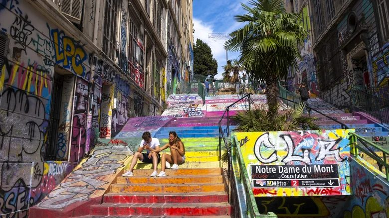
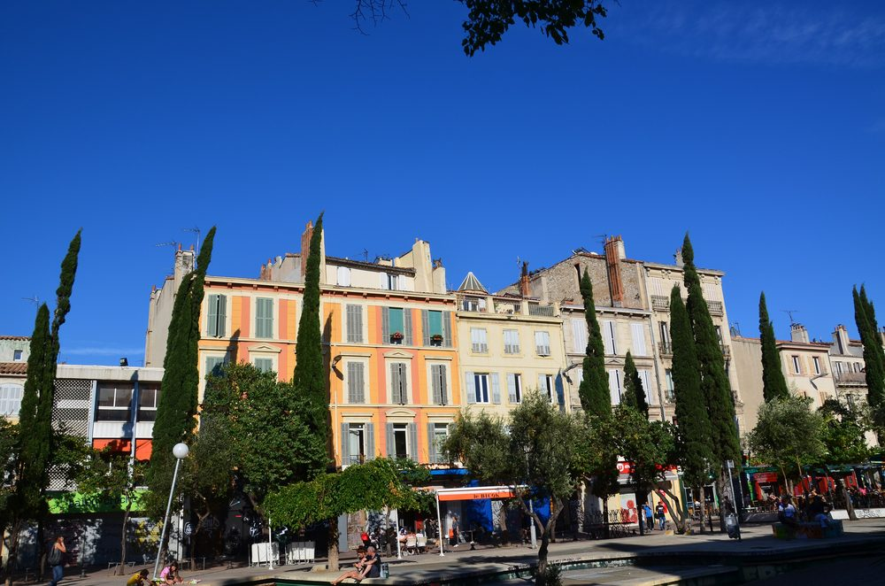
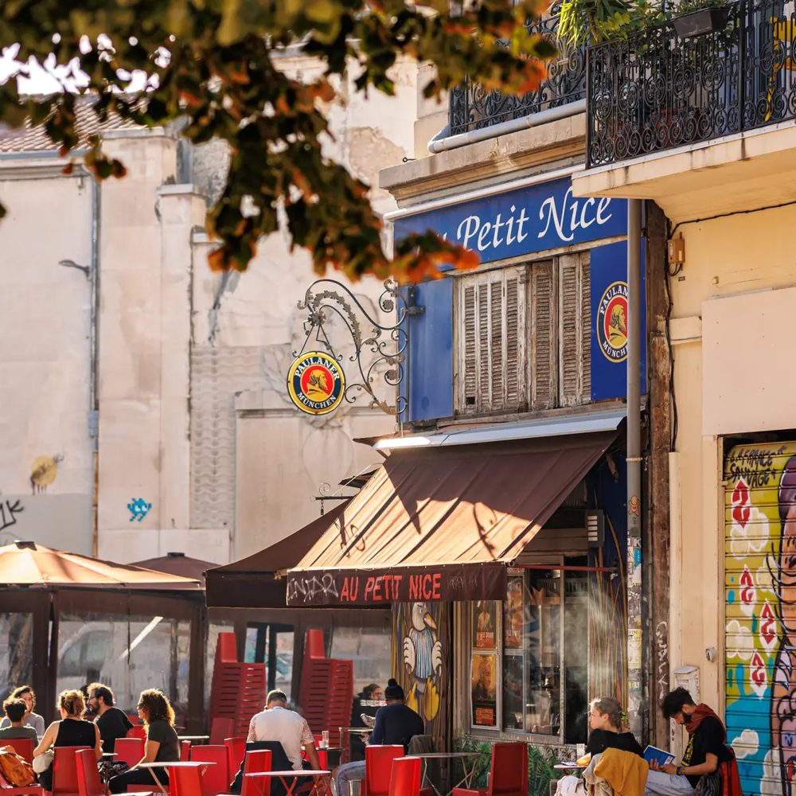
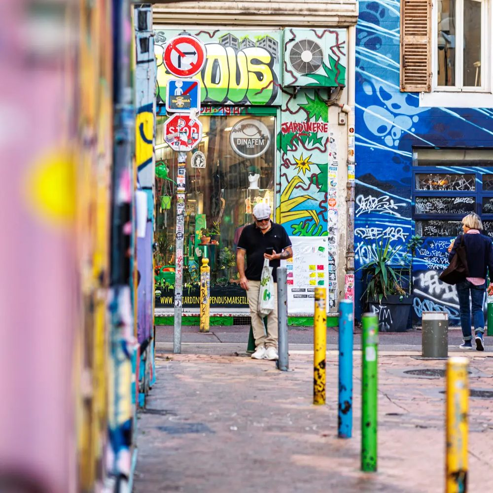
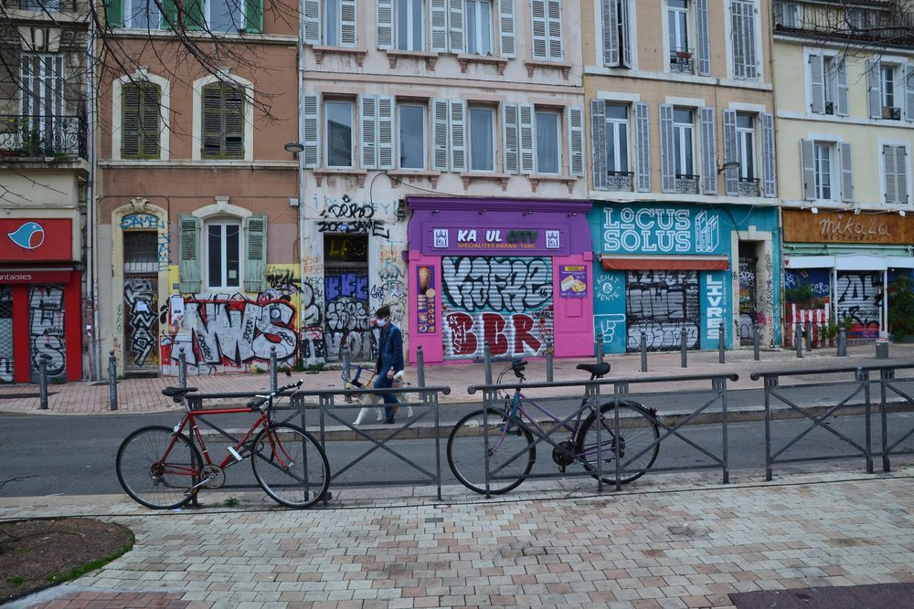
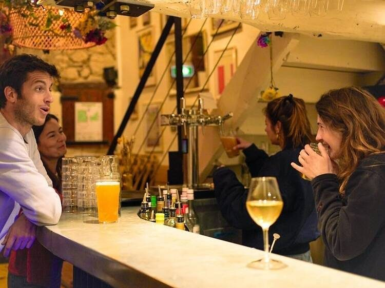
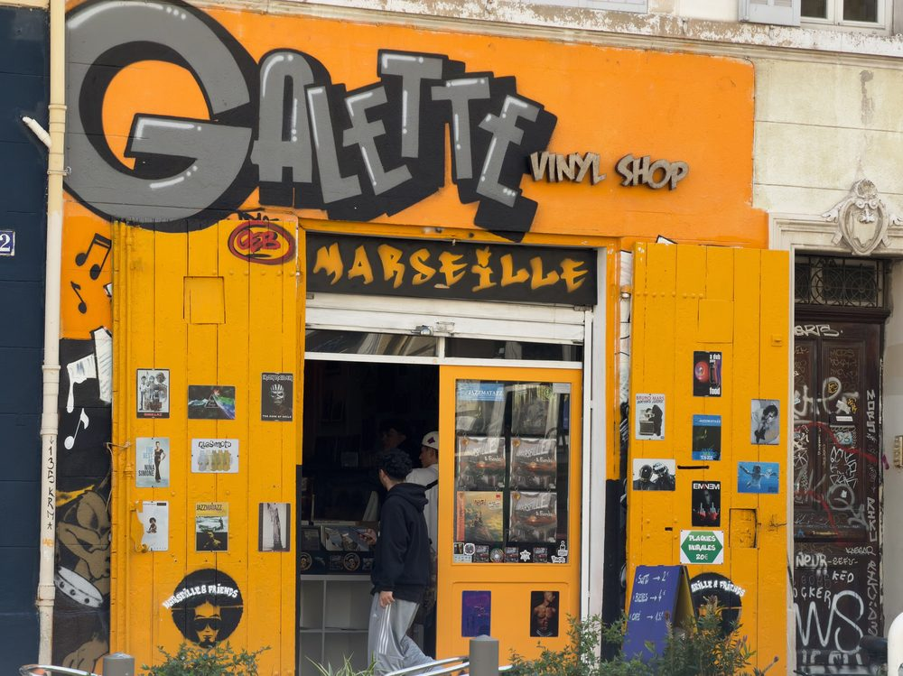
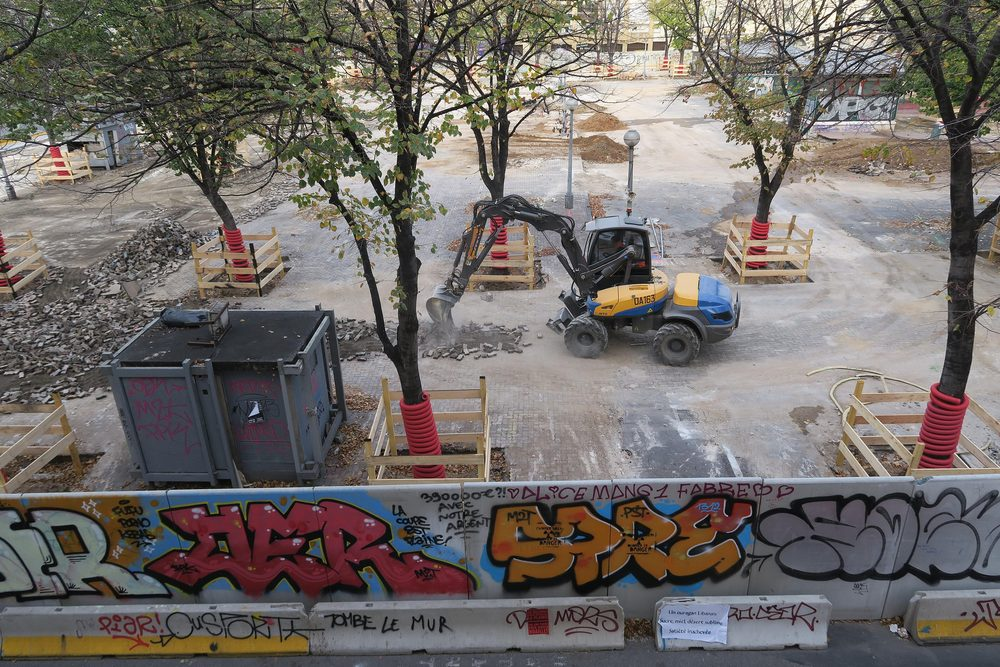
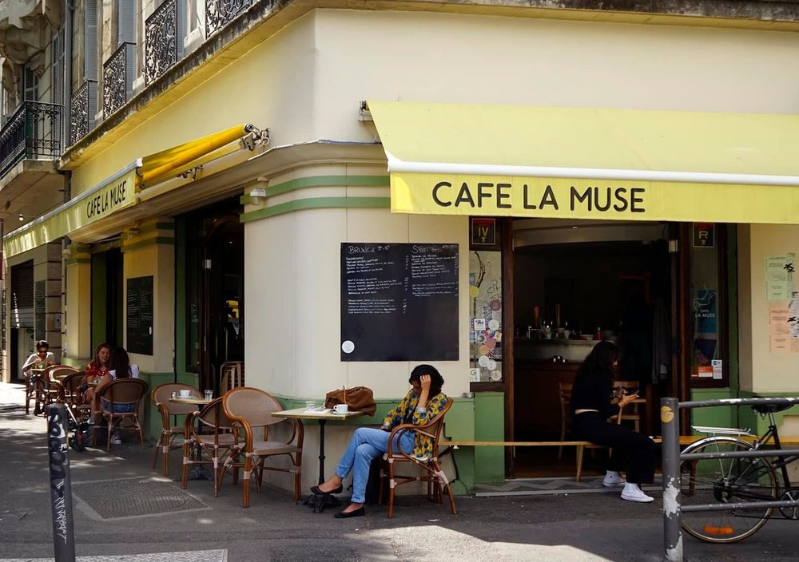
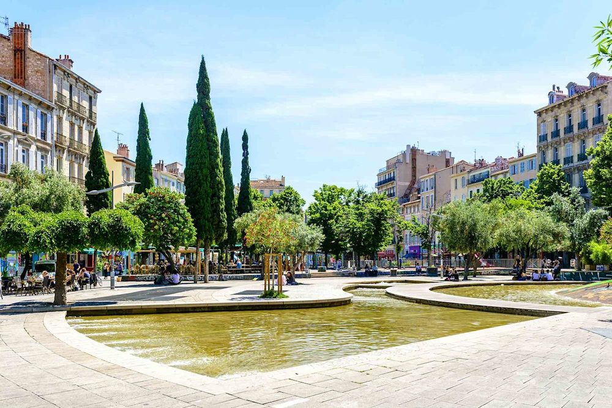

Le 25 septembre 2024, le magazine britannique Time Out publie sa liste annuelle des quartiers les plus cool de la planète. En tête, devant Casablanca, Bali et Séoul : un quartier de Marseille que la plupart des Marseillais appellent autrement. Notre-Dame-du-Mont, c’est le Cours Julien et La Plaine.
Numéro 1
sur 38 quartiers
N°1mondial en 2024
38quartiers classés
+11places par rapport à 2023
Chaque année, Time Out demande à ses rédactions du monde entier de désigner le quartier qui bouge le plus dans leur ville. Les propositions sont ensuite comparées sur quelques critères simples : la vie culturelle, les endroits où sortir, les bars et les restaurants, et surtout l’ambiance, ce caractère local qu’on ne trouve nulle part ailleurs.
En 2024, Notre-Dame-du-Mont arrive premier. Derrière lui : Mers Sultan à Casablanca, Pererenan à Bali, Seongsu-dong à Séoul. Le quartier figurait déjà dans l’édition précédente : il gagne onze places en un an.
Pour le justifier, le magazine parle d’un ancien quartier d’artistes, d’impasses colorées, de ruelles couvertes de graffitis, de rues bordées de platanes et d’escaliers qui serpentent. Et d’un esprit rebelle que le quartier n’a jamais perdu. L’information fait le tour du monde en quelques jours : CNN, Paris Match, les éditions espagnoles de Time Out, la presse australienne.

Les escaliers du Cours Julien · Photo Islands.com
Un quartier,
trois noms
Si vous cherchez « Notre-Dame-du-Mont » sur une carte, vous tomberez sur une église et une station de métro. C’est pourtant le nom officiel du quartier, l’un des quartiers administratifs du 6ᵉ arrondissement de Marseille.
Sur place, personne ou presque ne l’appelle ainsi. On dit le Cours Ju, pour le Cours Julien, la grande esplanade piétonne avec sa fontaine, ses bassins et ses terrasses. Et on dit La Plaine pour la place Jean-Jaurès, quelques rues plus haut, avec son marché et ses bars. La station de métro, elle, a tranché : elle s’appelle Notre-Dame-du-Mont – Cours Julien.
Ce site utilise les trois noms. Ils désignent le même triangle de rues, entre la Canebière, la rue de Rome et les pentes du Camas, dont l’histoire est racontée sur la page Le quartier.


Le Cours Julien · Au Petit Nice, sur La Plaine
Ce qui fait
le cool
Les murs, d’abord. Depuis les années 1980, le Cours Julien est l’un des hauts lieux du street art en France. Fresques, tags, collages, mosaïques : les œuvres se superposent, s’effacent, reviennent. Le grand escalier, la rue Pastoret, la rue des Trois-Rois changent de visage d’un mois à l’autre. On vous emmène les voir dans notre balade street art.


Marseille Tourisme · Jeanne Menjoulet, CC BY 2.0
La fête, ensuite. Le quartier concentre une densité rare de bars, de terrasses et de salles de concert. L’Espace Julien accueille des tournées internationales depuis 1984. Autour, des petites salles comme L’Intermédiaire, le Molotov ou La Maison hantée programment du punk, du jazz, de l’électro, presque tous les soirs. Le week-end, les drag-shows, les DJ sets et les concerts gratuits débordent sur les places.
Soirée drag · Concert · Photos Time Out Marseille
Le mélange, surtout. C’est ce que Time Out a le plus remarqué : des punks et des familles installées là depuis des générations, des étudiants, des artistes, des commerçants venus de toute la Méditerranée et, plus récemment, des Parisiens. On boit un café au comptoir à côté de gens qu’on ne croiserait pas ailleurs. Les commerces suivent la même logique : disquaires, librairies, friperies, épiceries solidaires, restaurants libanais, argentins ou palestiniens.


Au comptoir · Photo Time Out Marseille · Le disquaire Galette · Mike is Michi, CC BY-SA 4.0
Un quartier qui ne ressemble à aucun autre parce qu’il n’a jamais choisi entre ses habitants.
L’effet Time Out,
et ce qu’il coûte
Un tel titre ne laisse pas un quartier indifférent. Les premiers à en parler ont été les habitants eux-mêmes, entre fierté et ironie : « le plus cool du monde », ici, se dit souvent avec un sourire en coin. Puis sont venus les visiteurs, de plus en plus nombreux à monter l’escalier du Cours Julien téléphone à la main, et les guides de voyage qui ont ajouté le quartier à leurs incontournables.
La reconnaissance a aussi son revers. Le quartier change depuis des années, et la rénovation de La Plaine, entre 2018 et 2021, en a été le symbole. Les loyers augmentent, des commerces de proximité laissent la place à des adresses plus chères, et une partie des habitants s’inquiète de voir partir ce qui faisait justement le charme du lieu : des prix accessibles, des usages populaires, la possibilité de vivre là sans être riche.

Manifestation pour La Plaine, 2018 · Nattes à chat, CC BY-SA 4.0 · Le chantier · LaloMassalia, CC0
Le quartier garde pourtant sa capacité à dire non. En octobre 2026, l’élection de Miss Cagole au Traquenard s’est tenue le soir d’une journée de manifestations, revendiquée par ses organisateurs comme un acte politique. Le carnaval de La Plaine continue de brûler chaque printemps son Caramantran, le pantin qui porte les maux de l’année. Ces rendez-vous sont racontés dans Le quartier toute l’année.
Être cool, ici, ce n’est pas une tendance. C’est une façon de tenir ensemble. Visiter le quartier, c’est aussi le respecter : consommer chez les commerçants indépendants, garder ses décibels pour les salles de concert, et se souvenir que les gens qui y vivent ne sont pas un décor.
Visiter
Notre-Dame-du-Mont
Le quartier se parcourt à pied en une demi-journée, mais il se vit plutôt le soir. Arrivez en fin d’après-midi, prenez le temps des murs et des boutiques, puis restez pour l’apéro et un concert.
Le métro ligne 2 s’arrête au pied du quartier, à la station Notre-Dame-du-Mont – Cours Julien. Tram, bus, escaliers et adresses pour dormir : tout est dans notre page Venir au Cours Ju.


Le Café La Muse · Photo Time Out Marseille · La fontaine du Cours Julien · Getty Images, via Yahoo
Quel est le quartier le plus cool du monde ?
En septembre 2024, le magazine Time Out a classé Notre-Dame-du-Mont, à Marseille, premier de sa liste des 38 quartiers les plus cool du monde, devant Mers Sultan (Casablanca) et Pererenan (Bali).
Notre-Dame-du-Mont, Cours Julien et La Plaine, est-ce le même quartier ?
Oui. Notre-Dame-du-Mont est le nom officiel du quartier, celui de son église et de sa station de métro. Les Marseillais disent plutôt « le Cours Ju », du nom de sa grande esplanade, ou « La Plaine », le surnom de la place Jean-Jaurès voisine.
Où se trouve Notre-Dame-du-Mont à Marseille ?
Dans le 6ᵉ arrondissement (13006), sur une colline à dix minutes à pied du Vieux-Port. Station de métro : Notre-Dame-du-Mont – Cours Julien, sur la ligne 2.
Que faire à Notre-Dame-du-Mont ?
Se promener parmi le street art du Cours Julien et de la rue Pastoret, boire un verre en terrasse, voir un concert à l’Espace Julien ou dans les petites salles de La Plaine, chiner des vinyles, des livres et des vêtements d’occasion.
Sources : Time Out et le guide du quartier de Time Out Marseille, Made in Marseille.
Photos : Marseille Tourisme / Massimo Municchi et rédaction de Time Out Marseille (via timeout.com), Islands.com, Getty Images (via Yahoo), Mike is Michi (CC BY-SA 4.0), DC (CC BY-SA 3.0), Jeanne Menjoulet (CC BY 2.0), Nattes à chat (CC BY-SA 4.0), LaloMassalia (CC0), via Wikimedia Commons.